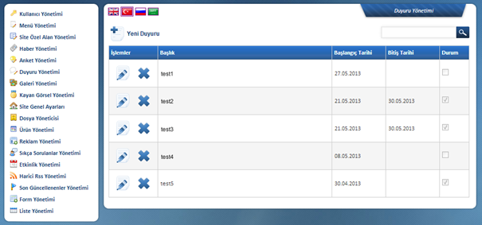
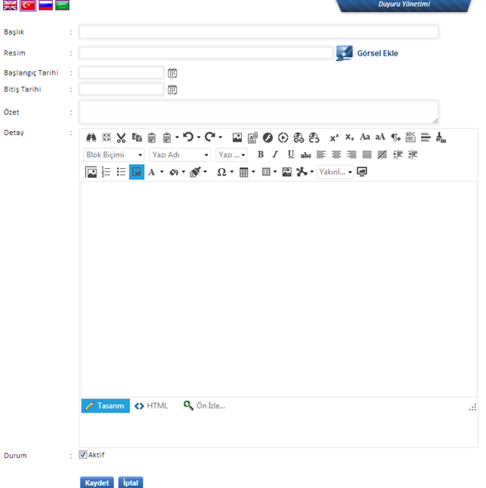

Duyuru Yönetimi:
Sitede yer almasý istenen Duyurularýn giriþi buradan
yapýlmaktadýr. Duyurular, haberlerden farklý olarak ileri dönük bir
bilgiyi-içeriði barýndýracak þekilde kurgulanmýþtýr. Bununla beraber bu þekilde
kullanýmý zorunlu deðildir. 

Baþlýk: Duyuru bandýnda görünecek olup çok uzun tutulmamasý önerilmektedir.
Resim: Duyuru alanýnda yer alacak mini görsel içeriðini buradan çekecektir. Duyuru görseli Görsel Ekle ikonu ile sunucuya gönderilebilir ya da oradan seçilerek içeriðe baðlantýlanabilir.
Açýklama: Duyuru alanýnda Baþlýk ve Görsel altýnda yer alan kýsa bilgilendirme bu alan üzerinden yapýlmaktadýr. Belli bir karakter sayýsýndan sonra sistem otomatik þekilde cümleyi bölmekte ve sona üç nokta (...) eklemektedir.
Detay: Bu alan yine yardýmcý editör vasýtasýyla istenilen þekilde doldurulacaktýr. Metin, görsel vs. kullanýmý yapýlabilir. Sitedeki sayfalardan biri þeklinde görünecektir.
Durum: Yeni bir Duyuru eklendiðinde Durum alaný iþaretli olmalýdýr. Var olan bir duyurunun sitede yayýndan kaldýrýlmasý için bu alandaki iþaretin kaldýrýlarak kaydedilmesi yeterlidir. Bu þekilde içerik silinmemiþ ancak yayýndan kaldýrýlmýþ ve yönetim panelinden ulaþýlabilir bir arþiv haline gelmiþ olacaktýr.